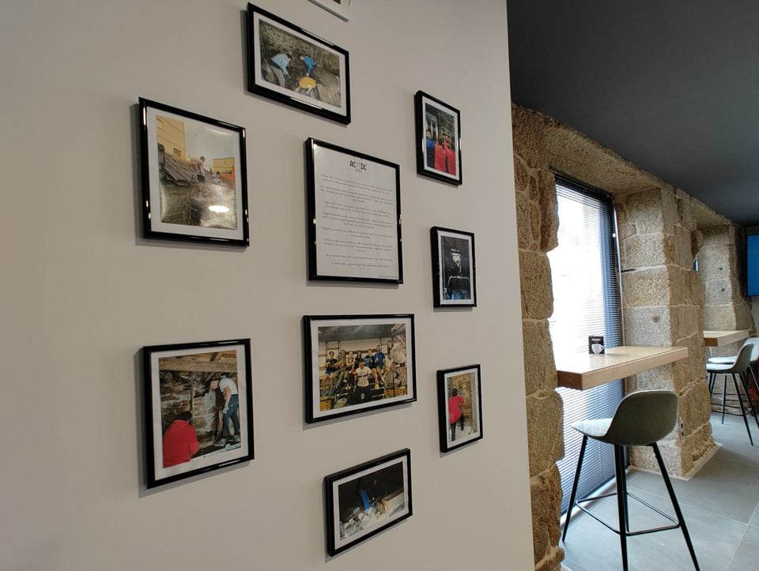
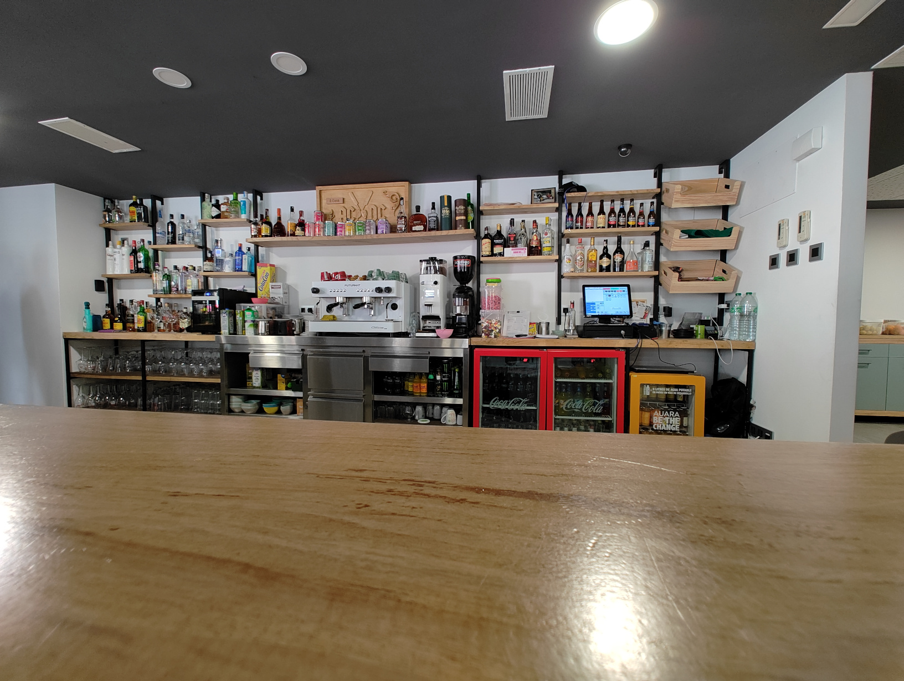
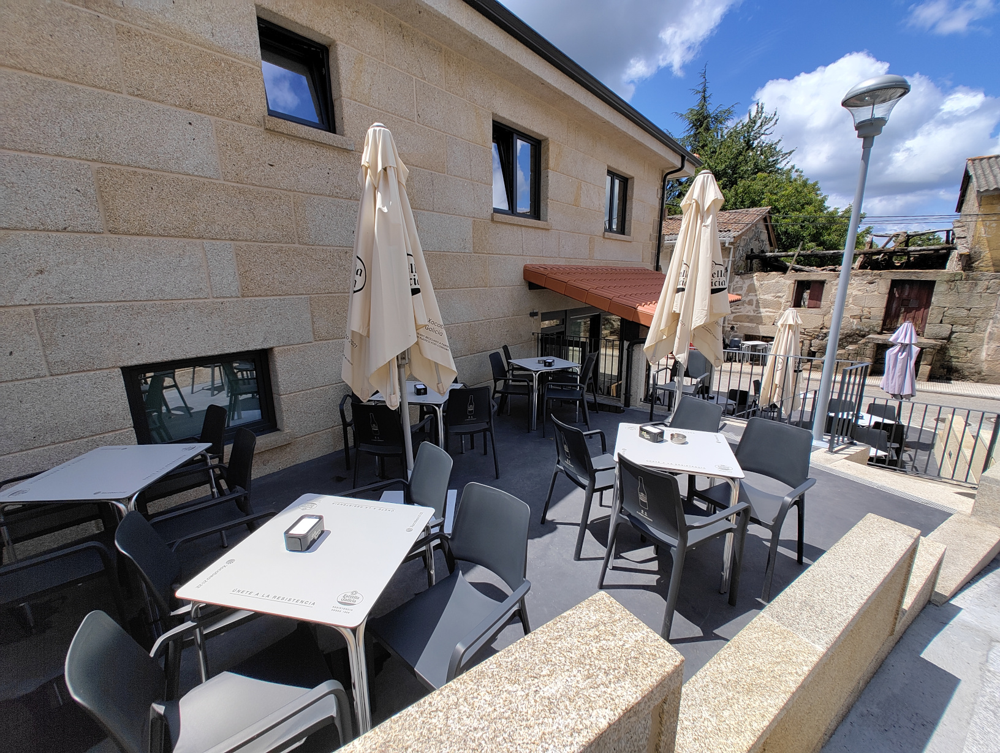
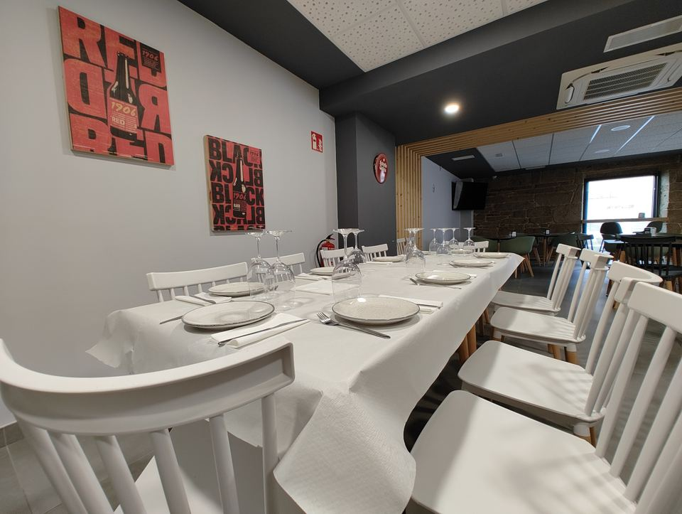
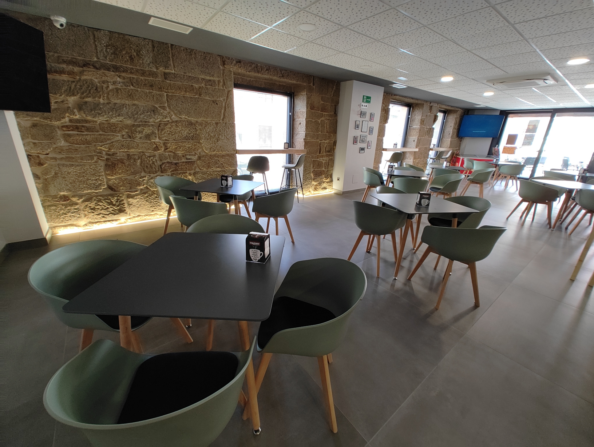

Lunes – Jueves
Bar: 7:30 – 23:00
Comedor: 13:00–16:00 y 19:30–22:00
Cocina de proximidad, ambiente acogedor y el sabor del pan artesano de Cea. Un restaurante moderno con alma de pueblo.
Bar y comedor abiertos de lunes a domingo. Consulta los horarios de comedor para reservar tu mesa.
Bar: 7:30 – 23:00
Comedor: 13:00–16:00 y 19:30–22:00
Bar: 7:30 – 00:00
Comedor: 13:00–16:00 y 19:30–23:00
Bar: 9:00 – 00:00
Comedor: 13:00–16:00 y 19:30–23:00
Bar: 9:00 – 23:00
Comedor: 13:00–16:00 y 19:30–22:00

A Casa dos Caretas nació en 2021, en plena pandemia, aunque el proyecto no despegó de verdad hasta la primavera de 2022. Lo que empezó como la reforma de una cuadra de animales se convirtió en la puesta en marcha de un sueño familiar.
Tras un año de vida en nuestro primer local, llegó el momento de crecer. En 2023 nos trasladamos a un espacio más amplio y moderno, más fiel al proyecto que siempre imaginamos, sin olvidar el rincón donde todo comenzó.
Hoy seguimos cocinando con la misma ilusión, agradecidos a todos los que nos acompañan en esta aventura. Y quién sabe… quizá algún día volvamos al lugar de donde venimos.
«Onde o pan é arte» — muchos de nuestros platos llevan el pan tradicional de Cea, elaborado artesanalmente por los vecinos de nuestra villa.
22 de junio de 2023
Descubre nuestra carta variada. De miércoles a domingo, disfruta también de nuestro menú especial de parrilla.
Encuentra tus platos preferidos en nuestra variada carta. Toca cualquier imagen para ampliarla.


De miércoles a domingo, disfruta de nuestro menú especial de parrilla con los mejores cortes a la brasa.

Contamos con una amplia selección de vinos. Disfrútalos con nosotros en buena compañía.


«Onde o pan é arte»
Muchos de nuestros platos se elaboran con el pan tradicional de Cea, hecho a mano por los artesanos de nuestra villa.
Dos terrazas exteriores para los días de sol, y en el interior dos grandes pantallas para seguir la Liga, Champions, F1 y MotoGP.




Fotos del día, eventos y novedades de la casa.
@acasadoscaretas
Ver perfilMenús a medida para grupos y celebraciones. Llámanos sin compromiso para gestionar tu reserva.
San Cristovo de Cea
Rúa España 43
32130 Cea, Ourense
¿Grupo grande o menú especial? Cuéntanos qué necesitas y te preparamos una propuesta a medida.
Llamar para reservar